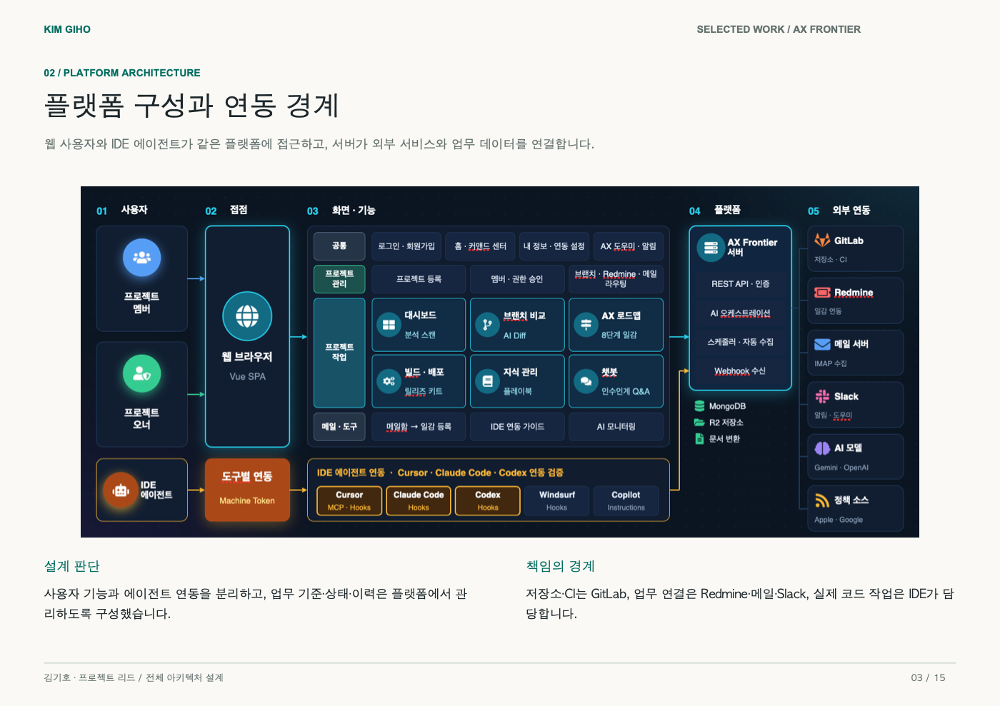

AX Frontier · 엔터프라이즈 AI 연동 플랫폼
비정형 요구사항(이메일, Redmine) 수집부터 IDE 에이전트(Cursor MCP) 실시간 맥락 주입, 불변 기준선(Baseline ID) 거버넌스 및 Playwright 브라우저 자동 재검증 파이프라인까지 아우르는 사내 표준 AI 플랫폼입니다.

사용자 기능과 에이전트 연동을 분리하고, 업무 기준·상태·이력은 플랫폼에서 중앙 관리하도록 설계했습니다.
저장소·CI는 GitLab, 업무 연결은 Redmine/메일/Slack, 실제 코드 작성은 IDE 에이전트가 담당합니다.
업무 도구를 하나의 흐름으로 통합
메일 서버와 Redmine 일감을 자동 수집하여 일감 맥락(Context)을 파싱하고, 분산 세션 기반 API를 통해 웹 화면과 AI 서비스에 실시간 제공합니다.
Cursor MCP & Hooks 에이전트 연동
개발자가 IDE(Cursor)에서 일감을 선택하면 MCP 서버를 통해 요구사항이 프롬프트에 자동 주입되며, 개발 완료 시 Hooks를 통해 결과 산출물을 플랫폼에 자동 제출합니다.
설계-구현 1:1 무결성 (Baseline ID)
단순 문서 저장을 넘어 불변의 Baseline ID를 발급합니다. 설계가 변경되면 기존 승인을 즉시 무효화하고 테스트 통과를 강제하는 엄격한 거버넌스를 구현했습니다.
Playwright 자동 검증 & CI 배포 결합
설계 버전과 Playwright 브라우저 E2E 테스트 결과를 1:1로 결합하여 무결성을 자동 증명하며, 통과 시 GitLab CI를 통해 변경 리소스를 증분 ZIP 패키징합니다.